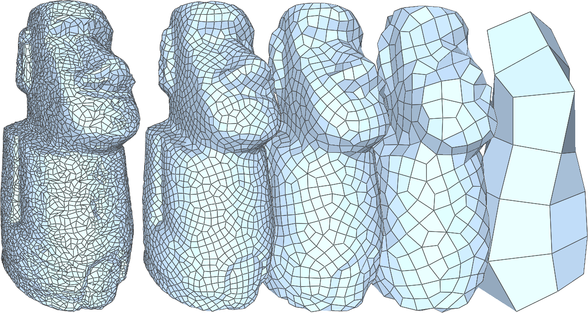
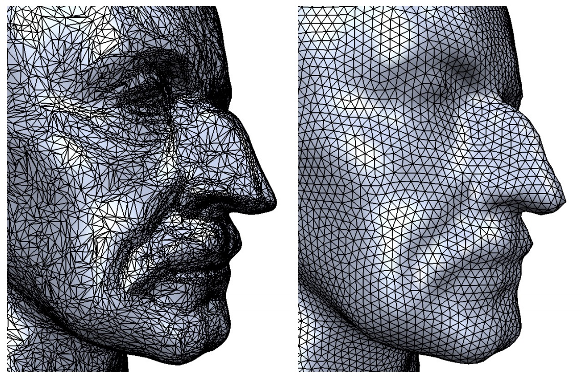

The goal of this project is to build an extension of the HW2 Meshediting Program. The two primary features that we are implementing are Mesh Simplification and Remeshing.
Here you should provide the context for your idea. Describe the problem that you are trying to solve, why it is challenging, why it is important, why you care about it and why others should care about it as well. List what resources, e.g. books, papers and/or online resources that are reference for your project.
List the computing platform, hardware and software resources that you will use for your project. You have a wide latitude here to use what you have access to, but be aware that you will have to support and trouble-shoot on your platform yourselves. If you are starting from an existing piece of code or system, describe and provide a pointer to it here.
This is the most important part of your proposal. You should carefully think through what you are trying to accomplish, what results you are going for, and why you think you can accomplish those goals. For example:
Since this is a graphics class you will likely define the kind of images you will create (e.g. including a photo of a new lighting effect you will simulate).
If you are working on an interactive system, describe what demo you will create.
Define how you will measure the quality / performance of your system (e.g. graphs showing speedup, or quantifying accuracy). It may not be possible to define precise target metrics at this time, but we encourage you to try.
What questions do you plan to answer with your analysis?
You should break this section into two parts: (1) what you plan to deliver, and (2) what you hope to deliver. In (1), describe what you believe you must accomplish to have a successful project and achieve the grade you expect (i.e. your baseline plan -- planning for some unexpected problems would make sense). In (2), describe what you hope to achieve if things go well and you get ahead of schedule (your aspirational plan).
|

|

|
In this section you should organize and plan the tasks and subtasks that your team will execute. Since presentations are 2.5 weeks from the due-date of the proposal, we recommend that you include a task for every half week.